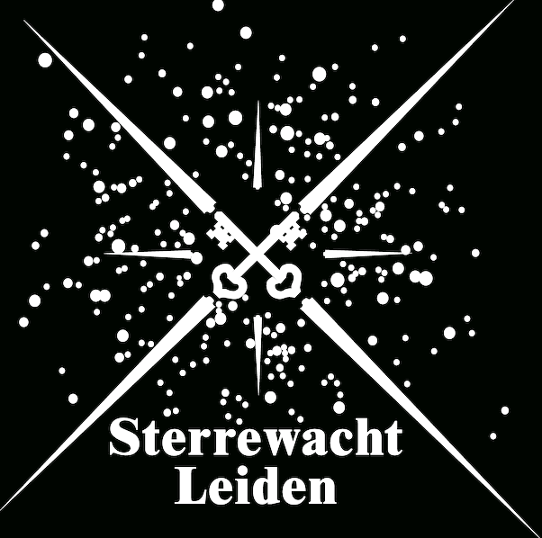

Current Affiliation -
My Advisor's Webpage -
Kaitlin Kratter Work -
Github My ADS Library LinkedIn Past Affiliations -

 Latest 1st-Author Paper -
TBA
Latest Co-Author Paper -
04/2016:
Mass transfer between debris discs during close stellar encounters
Welcome to My Home Page!
I am a 2nd-year graduate student at the University of Arizona's Steward Observatory.
I am also an NSF Fellow.
I work with Prof. Kaitlin Kratter on studying the formation and evolution of planets and protoplanetary disks.
Currently, I am investigating the viability of planet-induced vortices as a possible explanation for asymmetric dust features in ALMA observations of several different protoplanetary disks.
Want to learn more? Check out my Research page.

Before coming to Steward Observatory, I earned a Bachelor's degree in Physics at Cornell University, where I worked primarily in Professor Dong Lai's group.
For more personal info, check out my About Me page.
For more academic info, see my CV page.